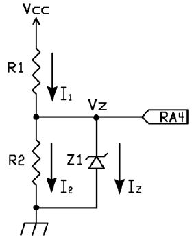
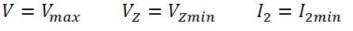
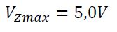
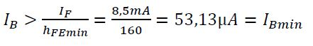

{kind=link}
{kind=link}

Di seguito si illustra il progetto di un orologio digitale. Il progetto è molto utile per capire il funzionamento delle dinamiche interne di un circuito gestito da un microcontrollore, il che diventa utilissimo per moltissime applicazioni dove la logica cablata non è sufficiente a soddisfare le specifiche di progetto. Pur essendo un progetto artigianale e scolastico, l’orologio non è molto ingombrante (7 cm di larghezza x 9cm di lunghezza)
Lo scopo del progetto è di realizzare un circuito in grado di mostrare l’ora in ore e minuti, di impostarla tramite dei pulsanti e di gestire il risparmio energetico a seconda che venga alimentato da rete o da batteria. Questo progetto non è quindi solo un puro e semplice esercizio, ma si tratta di un progetto con un’ applicazione pratica e funzionale.
L'orologio ha le seguenti specifiche:Lo schema a blocchi, illustrato nella figura seguente, suddivide in due parti principali il progetto: l’alimentazione e l’orologio.
Nel primo blocco, illustrato nella figura seguente, la tensione in ingresso al connettore a due poli X1-1 e X1-2 è continua di ampiezza compresa tra +7V e +9V, invece la tensione in ingresso al connettore jack J1 è anch’essa continua compresa tra +11V e +15V (si è utilizzato un trasformatore che trasforma i 230 V AC in 12 V DC).
Sono stati utilizzati due diodi 1N4007 in modo tale che in ingresso allo stabilizzatore LM7805 sia applicata la tensione del trasformatore se presente, altrimenti viene applicata quella della batteria, questo per far risparmiare energia alla batteria. Al pin RA4 del microcontrollore viene inviata la tensione d’alimentazione del trasformatore tramite un apposito diodo Zener (BZX79C4V7) per segnalare al PIC se questa alimentazione è o meno presente per gestire la modalità a risparmio energetico se è presente solo l’alimentazione a batteria. L’integrato stabilizzatore LM7805 fornisce in uscita 5V utilizzati per alimentare l’intero circuito.Il primo pulsante è connesso al pin RA5, il master clear, questo ha funzione di RESET, ovvero se premuto riavvia il sistema e tutti i led del display si accendono e si spengono in modo intermittente per segnalare che si deve impostare l’ora.
Il secondo pulsante è connesso al pin RB0 ed ha funzione di SELECT, se premuto per 4 volte consecutive, seleziona quale cifra del display deve essere regolata, quando viene premuto per la quinta volta fa partire l’orologio, funziona anche nella modalità basso consumo. Il terzo pulsante è connesso al pin RB1 ed ha funzione di SET, premuto successivamente , permette di impostare la cifra desiderata.L’oscillatore al quarzo di frequenza 32.768Hz è connesso ai pin RB6 e RB7, fornisce il clock al Timer1, periferica interna del PIC16F628A.
Sono stati utilizzati 4 diplay 7 segmenti a catodo comune , uno di essi, le decine dei minuti, è girato così da posizionare il suo decimal point in alto per separare le ore dai minuti. Non è stato utilizzato un decoder BCD/7 segmenti, quindi la decodifica viene gestita via software, dunque è stato utilizzato un integrato contenente 8 resistenze, questo per risparmiare spazio e collegamenti nel pcb. Inoltre per risparmiare energia i display sono multiplexati, ovvero è acceso un solo display alla volta, questo tramite 4 transistor BJT BC337 col collettore connesso al catodo comune di ciascun display, l’emettitore connesso a massa e la base comandata dai pin RA0, RA1, RA2, RA3 del microcontrollore PIC16F628A.
Per il funzionamento del PIC16F628A si è optato per l’oscillatore interno a 4 MHz per risparmiare componenti, il ciclo di una istruzione dura 1 microsecondo. Tra i pin di VDD e VSS è stato aggiunto un condensatore elettrolitico di disaccoppiamento da 1uF.
Riassumendo nella seguente tabella la definizione dei pin:
<brIl diagramma di flusso relativo all’alimentazione del progetto si suddivide principalmente in due parti: alimentazione da rete e da batteria.
Per prima cosa viene controllato il pulsante SELECT: se non è premuto lascia il display nella modalità blinking. Se invece è premuto permette di impostare l’ora tramite il pulsante SET, l’ordine di impostazione dell’ora è decine delle ore, unità delle ore, decine dei minuti e unità dei minuti. A questo punto parte il conteggio dei secondi tramite il Timer1. Adesso viene controllato il tipo di alimentazione:Il diagramma di flusso seguente descrive il funzionamento dell’ISR (interrupt service routine).
Per prima cosa viene testato il Timer1, se il Timer non si è azzerato maschera l’interruzione RB0INT, “manda” GIE a 1 abilitando così le interruzioni, accende i display per otto secondi, azzera la richiesta di interruzione RB0INT e termina l’ISR. Se Timer1 si è azzerato e TMR1IF = 1, per prima cosa salva il contesto del microcontrollore, poi azzera la richiesta di interruzione di Timer1 e comincia il ciclo per il conteggio dei secondi, dei minuti e delle ore. Clicca sull'immagine per ingrandirlaResistenze del diodo Zener:
Valore più piccolo di Iz:
Per garantire che lo zener sia in conduzione occorre:
Valore più grande di Iz: 
Per garantire che lo zener non si danneggi occorre:

Scelte di progetto:
Diodo zener: BZX9C4V7
Potenza dissipata:
Potenza massima dissipata:
Si sceglie:
Per avere con valore di I2 qualche mA si sceglie:
Condensatori
C1=330 nF e C2=100 nF sono stati scelti consultando il datasheets del regolatore di tensione.
100 microF per stabilizzare la tensione di alimentazione durante la commutazione dell'alimentazione da rete a batteria e viceversa.Resistenze dei transistor
8 Resistenze integrate dual in-line package – DIP 330Ω valore nominale
Per garantire la saturazione del transistor:
Calcolo il valore della resistenza di base del transistor:
Resistenze dei pulsanti
R3=R6=R7=10kΩ scelte consultando la documentazione Microchip AN590.
R4=R5=220Ω scelte consultando la documentazione Microchip AN590: 820 ohm, valore ridotto per adattarlo alle esigenze del progetto Piclock.Quarzo
Lista dei componenti utilizzati per realizzare il progetto:
Il progetto è stato concluso con successo, anche se non si era partiti nel modo migliore, visto la scarsità di componenti reperibili nel magazzino del laboratorio OEN2 dell'istituto.
Sicuramente per questo tipo di progetto e per la larga memoria di programma si poteva optare per la programmazione in C del PIC16F628A. Per diminuire le dimensioni del PCB si potevano utilizzare componenti SMD, non presenti però nel magazzino della scuola.; IT Zuccante - Mestre - A.S. 2013/2014
; Indirizzo Elettronica ed Elettrotecnica - Articolazione Elettronica - classe 4 EA
; TECNOLOGIE E PROGETTAZIONE DI SISTEMI ELETTRICI ED ELETTRONICI - E. Minosso, R. Bardelle
;
; 26 maggio 2014
;
; Progetto " PICLOCK "
;
;*********************************************************************************************************************************
;=================================================================================================================================
processor 16F628A
#include P16F628A.INC
; imposta la CPU - Configuration Word
; __
; CW<13> = CP = 1 Code Protection OFF _CP_OFF = 11 1111 1111 1111
; ___
; CW<8> = CPD = 1 Data Code Protection OFF _CPD_OFF = 11 1111 1111 1111
; CW<7> = LVP = 0 Low-Voltage Programming disabled _LVP_OFF = 11 1111 0111 1111
; CW<6> = BOREN = 0 Brown-Out Reset disabled _BOREN_OFF = 11 1111 1011 1111
; ____ ____
; CW<5> = MCLRE = 1 pin RA5/MCLR/Vpp function is MCLR _MCLRE_ON = 11 1111 1111 1111
; _____
; CW<3> = PWRTE = 0 Power-up Timer enabled _PWRTE_ON = 11 1111 1111 0111
; CW<2> = WDTE = 0 Watchdog Timer disabled _WDTE_OFF = 11 1111 1111 1011
; CW<4,1-0> = FOSC<2:0> = 100 INTOSC oscillator:
; I/O function on RA6/OSC2/CLKOUT RA7/OSC1/CLKIN pins _INTOSC_OSC_NOCLKOUT = 11 1111 1111 1100
;
; Configuration Word Register = 1x xxx1 0011 0000
; Configuration Word Register = 2130h
__config _CP_OFF & _CPD_OFF & _LVP_OFF & _BOREN_OFF & _MCLRE_ON & _PWRTE_ON & _WDTE_OFF & _INTOSC_OSC_NOCLKOUT
radix DEC
; COSTANTI =======================================================================================================================
Blank equ 10 ; utilizzata nella decodifica BCD/7seg per tenere spenti tutti i led del display
; VARIABILI ======================================================================================================================
cblock 0x20 ; definisce gli indirizzi delle variabili seguenti partendo dall'indirizzo 20h
U_min ; unità dei minuti --> display n° 0
D_min ; decine dei minuti --> display n° 1
U_ore ; unità delle ore --> display n° 2
D_ore ; decine dedelle ore --> display n° 3
Due_punti ; memorizza l'accensione e lo spegnimento dei due punti --> display n° 1 e n° 2
Conta_sec ; contatore che va da 0 a 29 --> si incrementa ogni 2 secondi di tempo, per cui quando arriva a 30 significa
; che sono passati 30 x 2 secondi = 60 secondi
Contatore1 ; variabile contatore
Contatore2 ; variabile contatore
Acceso ; variabile booleana: Acceso = 1 <--> display acceso; Acceso = 0 <--> display spento
RB0_INT ; variabile booleana: RB0_INT = 1 <--> eseguita l'ISR dell'interruzione RB0/INT
; RB0_INT = 0 <--> non è stata eseguita l'ISR dell'interruzione RB0/INT
; INTERRUPT SERVICE ROUTINE
STATUS_temp ; salva temporaneamente il contesto del uC (registro STATUS)
endc ; fine della direttiva cblock
W_temp equ 0x70 ; salva temporaneamente il contesto del uC (W deve essere salvato negli
; ultimi 16 GPRs del banco 00, che sono replicati anche negli altri tre
; banchi di memoria, così per accedere a W_temp non occorre modificare
; RP1 ed RP0 del registro STATUS)
; INIZIO PROGRAMMA ===============================================================================================================
org 0
GOTO boot ; avvia il programma principale
; gestore dell'interruzione ======================================================================================================
org 4
BTFSS PIR1, TMR1IF ; SE TMR1IF = 1 esegui l'ISR "rtc" che aggiorna i secondi, i minuti e le ore
GOTO wake_up ; ALTRIMENTI esegui l'ISR "wake-up" che accende nuovamente il display
; ISR rtc (real-time clock) ======================================================================================================
; salva il contesto del uC
rtc MOVWF W_temp ; salva il contenuto di W per poter usare subito W nell'ISR
SWAPF STATUS, W ; copia temporaneamente in W i nibble scambiati di STATUS
BCF STATUS, RP1 ; seleziona
BCF STATUS, RP0 ; il banco 00
MOVWF STATUS_temp ; salva i nibble scambiati di STATUS
BCF PIR1, TMR1IF ; azzera il flag di interruzione di Timer1
; aggiorna il contatore dei secondi
INCF Conta_sec, F ; Conta_sec = Conta_sec + 1
MOVLW 30 ; controlla
XORWF Conta_sec, W ; se Conta_sec = 30
BTFSS STATUS, Z ; SE Conta_sec = 30 ALLORA azzera Conta_sec e incrementa U_min
GOTO fine_ISR ; ALTRIMENTI finisci l'ISR
; aggiorna le unità dei minuti
CLRF Conta_sec ; Conta_sec = 0
INCF U_min, F ; U_min = U_min + 1
MOVLW 10 ; controlla
XORWF U_min, W ; se U_min = 10
BTFSS STATUS, Z ; SE U_min = 10 ALLORA azzera U_min e incrementa D_min
GOTO fine_ISR ; ALTRIMENTI finisci l'ISR
; aggiorna le decine dei minuti
CLRF U_min ; U_min = 0
INCF D_min, F ; D_min = D_min + 1
MOVLW 6 ; controlla
XORWF D_min, W ; se D_min = 6
BTFSS STATUS, Z ; SE D_min = 6 ALLORA azzera D_min e incrementa U_ore
GOTO fine_ISR ; ALTRIMENTI finisci l'ISR
; aggiorna le unità delle ore e le decine delle ore
CLRF D_min ; D_min = 0
INCF U_ore, F ; U_ore = U_ore + 1
MOVLW 2 ; controlla
XORWF D_ore, W ; se D_ore <> 2
BTFSC STATUS, Z ; SE D_ore <> 2 ALLORA controlla se U_ore = 10
GOTO azzera ; ALTRIMENTI controlla se U_ore = 4
MOVLW 10 ; controlla
XORWF U_ore, W ; se U_ore = 10
BTFSS STATUS, Z ; SE U_ore = 10 ALLORA azzera U_ore e incrementa D_ore
GOTO fine_ISR ; ALTRIMENTI finisci l'ISR
CLRF U_ore ; U_ore = 0
MOVLW Blank ; controlla
XORWF D_ore, W ; se D_ore <> blank
BTFSC STATUS, Z ; SE D_ore <> blank ALLORA incrementa D_ore
CLRF D_ore ; ALTRIMENTI D_ore = 0
INCF D_ore, F ; D_ore = D_ore + 1
GOTO fine_ISR ; finisci l'ISR
azzera MOVLW 4 ; controlla
XORWF U_ore, W ; se U_ore = 4
BTFSS STATUS, Z ; SE U_ore = 4 ALLORA azzera e finisci l'ISR
GOTO fine_ISR ; ALTRIMENTI finisci l'ISR
CLRF U_ore ; U_ore = 0
MOVLW Blank ; spegni
MOVWF D_ore ; il display n° 3
; ripristina il contesto del uC
fine_ISR SWAPF STATUS_temp, W ; scambia e copia in W i nibble salvati in STATUS_temp
MOVWF STATUS ; ripristina il contenuto di STATUS
SWAPF W_temp, F ; scambia i nibble salvati in W_temp
SWAPF W_temp, W ; scambia e ripristina il contenuto di W
RETFIE ; riprendi il processo interrotto
; FINE ISR rtc ===================================================================================================================
; ISR wake_up ====================================================================================================================
wake_up BCF INTCON, INTE ; maschera l'interruzione RB0/INT
BSF INTCON, GIE ; abilita le interruzioni
BSF RB0_INT, 0 ; RB0_INT = 1 per segnalare che è stata fatta l'ISR wake-up
MOVLW 2 ; inizializza
MOVWF Contatore2 ; il Contatore2
iniz_cont1 MOVLW 200 ; inizializza
MOVWF Contatore1 ; il Contatore1
due_punti_on3 BTFSS TMR1H, 6 ; SE TMR1H<6> = 1 ALLORA accendi i due punti
GOTO due_punti_off3 ; ALTRIMENTI spegni i due punti
BSF Due_punti, 7 ; accendi i due punti
GOTO fai_ref ; fai un refresh
due_punti_off3 BCF Due_punti, 7 ; spegni i due punti
fai_ref CALL refresh ; fai il refresh del display
DECFSZ Contatore1, F ; Contatore1 = Contatore1 - 1, SE Contatore1 = 0 ALLORA decrementa Contatore 2
GOTO due_punti_on3 ; ALTRIMENTI fai il refresh del display
DECFSZ Contatore2, F ; Contatore2 = Contatore2 - 1, SE Contatore2 = 0 ALLORA finisci ISR e vai in power-down mode
GOTO iniz_cont1 ; ATRIMENTI inizializza Contatore 1
BCF INTCON, INTF ; azzera il flag dell'interruzione RB0/INT
RETFIE ; riprendi il processo interrotto
; FINE ISR wake_up ===============================================================================================================
; SUBROUTINE refresh =============================================================================================================
; Legge i valori delle ore, dei minuti e dei 2 punti e accende in successione i 4 diplay a 7 segmenti, nell'ordine che
; va dal display n° 3 al display n° 0.
; Ogni display rimane acceso circa 5 ms, per cui tutta la subroutine viene eseguita in circa 20 ms.
;
; VARIABILI DI INGRESSO:
; U_min unità dei minuti --> display n° 0
; D_min decine dei minuti --> display n° 1
; U_ore unità delle ore --> display n° 2
; D_ore decine dei minuti --> display n° 3
; Due_punti memorizza l'accensione e lo spegnimento dei due punti --> display n° 1 e n° 2
; VARIABILI DI USCITA:
; RA7 RA6 RA5 RA4 RA3 RA2 RA1 RA0 <-- PORTA
; DP a RESET BAT disp3 disp2 disp1 disp0
; RB7 RB6 RB5 RB4 RB3 RB2 RB1 RB0 <-- PORTB
; T1OSI T1OSO b c d e f g
; ======================================================================================================================
refresh BSF STATUS, RP0 ; seleziona il banco 01
BCF TRISB, TRISB0 ; imposta RB0 come pin di ouput
BCF TRISB, TRISB1 ; imposta RB1 come pin di output
BCF STATUS, RP0 ; ritorna al banco 00
CLRF PORTA ; spegni i quattro display
MOVF D_ore, W ; decodifica i segmenti da accendere
CALL decod_BCD_7seg ; per il display n° 3 delle DECINE DELLE ORE
MOVWF PORTB ; accendi/spegni i segmenti b, c, d, e, f, g del diaplay n° 3
ANDLW B'01000000' ; cattura il valore acceso/spento del segmento a
IORWF PORTA, F ; accendi/spegni il segmento a
BSF PORTA, RA3 ; accendi il display n° 3
CALL aspetta_5ms ; lascia acceso il display n° 3 per 5 ms
CLRF PORTA ; spegni i quattro display
MOVF U_ore, W ; decodifica i segmenti da accendere
CALL decod_BCD_7seg ; per il display n° 2 delle UNITA' DELLE ORE
MOVWF PORTB ; accendi/spegni i segmenti b, c, d, e, f, g del diaplay n° 2
ANDLW B'01000000' ; cattura il valore acceso/spento del segmento a
IORWF PORTA, F ; accendi/spegni il segmento a
MOVF Due_punti, W ; cattura il valore acceso/spento dei due punti
IORWF PORTA, F ; accendi/spegni i due punti
BSF PORTA, RA2 ; accendi il display n° 2
CALL aspetta_5ms ; lascia acceso il display n° 2 per 5 ms
CLRF PORTA ; spegni i quattro display
MOVF D_min, W ; decodifica i segmenti da accendere
CALL decod_BCD_7seg ; per il display n° 1 delle DECINE DEI MINUTI
MOVWF PORTB ; accendi/spegni i segmenti b, c, d, e, f, g del diaplay n° 1
ANDLW B'01000000' ; cattura il valore acceso/spento del segmento a
IORWF PORTA, F ; accendi/spegni il segmento a
MOVF Due_punti, W ; cattura il valore acceso/spento dei due punti
IORWF PORTA, F ; accendi/spegni i due punti
BSF PORTA, RA1 ; accendi il display n° 1
CALL aspetta_5ms ; lascia acceso il display n° 1 per 5 ms
CLRF PORTA ; spegni i quattro display
MOVF U_min, W ; decodifica i segmenti da accendere
CALL decod_BCD_7seg ; per il display n° 0 delle UNITA' DEI MINUTI
MOVWF PORTB ; accendi/spegni i segmenti b, c, d, e, f, g del diaplay n° 0
ANDLW B'01000000' ; cattura il valore acceso/spento del segmento a
IORWF PORTA, F ; accendi/spegni il segmento a
BSF PORTA, RA0 ; accendi il display n° 0
CALL aspetta_5ms ; lascia acceso il display n° 0 per 5 ms
CLRF PORTA ; spegni i quattro display
BSF STATUS, RP0 ; seleziona il banco 01
BSF TRISB, TRISB0 ; imposta RB0 come pin di input
BSF TRISB, TRISB1 ; imposta RB1 come pin di input
BCF STATUS, RP0 ; ritorna al banco 00
RETURN
; FINE SUBROUTINE refresh ========================================================================================================
; SUBROUTINE decod_BCD_7seg ======================================================================================================
; Esegue la decodifica BCD/7 segmenti con la seguente tavola di verità:
;
; N | D C B A || a b c d e f g a
; ------------------------------------------ -------
; 0 | 0 0 0 0 || 1 1 1 1 1 1 0 | |
; 1 | 0 0 0 1 || 0 1 1 0 0 0 0 f | | b
; 2 | 0 0 1 0 || 1 1 0 1 1 0 1 | g |
; 3 | 0 0 1 1 || 1 1 1 1 0 0 1 -------
; 4 | 0 1 0 0 || 0 1 1 0 0 1 1 | |
; 5 | 0 1 0 1 || 1 0 1 1 0 1 1 e | | c
; 6 | 0 1 1 0 || 1 0 1 1 1 1 1 | |
; 7 | 0 1 1 1 || 1 1 1 0 0 0 0 -------
; 8 | 1 0 0 0 || 1 1 1 1 1 1 1 d
; 9 | 1 0 0 1 || 1 1 1 1 0 1 1
; 10 | 1 0 1 0 || 0 0 0 0 0 0 0 <-- blank
;
; VARIABILE DI INGRESS0:
; W: codice BCD (numero da 0 a 10)
; VARIABILE DI USCITA:
; W: segmenti da accendere 1 <--> acceso 0 <--> spento
; ================================================================================================================================
decod_BCD_7seg ADDWF PCL, F ; seleziona il codice corrispondente al numero contenuto in W
RETLW B'01111110' ; segmenti del numero 0
RETLW B'00110000' ; segmenti del numero 1
RETLW B'01101101' ; segmenti del numero 2
RETLW B'01111001' ; segmenti del numero 3
RETLW B'00110011' ; segmenti del numero 4
RETLW B'01011011' ; segmenti del numero 5
RETLW B'01011111' ; segmenti del numero 6
RETLW B'01110000' ; segmenti del numero 7
RETLW B'01111111' ; segmenti del numero 8
RETLW B'01111011' ; segmenti del numero 9
RETLW B'00000000' ; blank
; FINE SUBROUTINE decod_BCD_7seg =================================================================================================
; SUBROUTINE aspetta_5ms =========================================================================================================
; Utilizza Timer0 per tenere impegnata la CPU per un intervallo di tempo che dura circa 5 ms:
;
; Fosc = 4 MHz oscillatore interno
; Fosc/4 = 1 MHz frequenza base del segnale di clock
; Tck = 1 / 1 MHz = 1 microsec periodo base del segnale di clock
; D = 128 divisore del prescaler
; N = 39 numero di impulsi contati da Timer0
; T = N x D x Tck = 39 x 128 x 1 microsec = 4,992 ms tempo impiegato da Timer0 per generare l'overflow
; N_iniz = 256 - 39 = 217 numero di partenza di Timer0
; ================================================================================================================================
aspetta_5ms BCF INTCON, T0IF ; azzera il flag di interruzione delll'overflow di Timer0
MOVLW 217 ; inizializza e
MOVWF TMR0 ; fai partire Timer0
test_T0IF BTFSS INTCON, T0IF ; SE TOIF = 1 ALLORA Timer0 si è azzerato, quindi ritorna
GOTO test_T0IF ; ALTRIMENTI controlla Timer0
RETURN
; FINE SUBROUTINE aspetta_5ms ====================================================================================================
; SUBROUTINE antirimbalzo ========================================================================================================
; Tiene impegnata la CPU per circa 40 ms.
; ================================================================================================================================
antirimbalzo CALL aspetta_5ms
CALL aspetta_5ms
CALL aspetta_5ms
CALL aspetta_5ms
CALL aspetta_5ms
CALL aspetta_5ms
CALL aspetta_5ms
CALL aspetta_5ms
RETURN
; FINE SUBROUTINE antirimbalzo ==================================================================================================
; INIZIO PROGRAMMA PRINCIPALE ====================================================================================================
; imposta PORTA e PORTB ----------------------------------------------------------------------------------------------------------
;
; RA7 RA6 RA5 RA4 RA3 RA2 RA1 RA0
; DP a disp3 disp2 disp1 disp0 <-- OUTPUT
; RESET BAT <-- INPUT
;
; RB7 RB6 RB5 RB4 RB3 RB2 RB1 RB0
; b c d e f g <-- OUTPUT
; T1OSI T1OSO SET SELECT <-- INPUT
;
boot CLRF PORTA ; azzera i latch di uscita di PORTA
CLRF PORTB ; azzera i latch di uscita di PORTB
MOVLW B'00000111' ; spegni i comparatori e abilita la funzione
MOVWF CMCON ; di I/O digitale dei pin di PORTA
BSF STATUS, RP0 ; seleziona il banco 01
MOVLW B'00110000' ; RA7 RA6 RA3 RA2 RA1 RA0 pin di output digitale
MOVWF TRISA ; RA5 RA4 pin di input digitale
MOVLW B'11000011' ; RB5 RB4 RB3 RB2 pin di output digitale
MOVWF TRISB ; RB7 RB6 RB1 RB0 pin di input (Timer1 e pulsanti)
; imposta Timer0 -----------------------------------------------------------------------------------------------------------------
; OPTION_REG<7> = RPBU = 1 resistenze interne di pull-up disattivate
; OPTION_REG<6> = INTEDG = 0 interrupt sul fronte di discesa del pin RB0/INT
; OPTION_REG<5> = T0CS = 0 segnale di clock interno
; OPTION_REG<4> = T0SE = 1 incrementa Timer0 sul fronte di salita
; OPTION_REG<3> = PSA = 0 assegna il prescaler a Timer0
; OPTION_REG<210> = PS<210> = 110 divisore del prescaler D = 128
MOVLW B'10010110'
MOVWF OPTION_REG
BCF STATUS, RP0 ; seleziona il banco 00
; imposta Timer1 -----------------------------------------------------------------------------------------------------------------
;
; T1CON<76> = unimplemeted = 00 read as '0'
; T1CON<54> = T1CKPS<1:0> = 00 nessun divisore del prescaler
; T1CON<3> = T1OSCEN = 1 abilita l'oscillatore di Timer1
; ______
; T1CON<2> = T1SYNC = 1 non sincronizzare il clock esterno con la CPU
; T1CON<1> = TMR1CS = 1 sorgente esterna del segnale di clock (in questo caso l'oscillatore di Timer1)
; T1CON<0> = TMR1ON = 1 abilita Timer1
MOVLW B'00001111'
MOVWF T1CON
; imposta l'interruzione dioverflow di Timer1 ------------------------------------------------------------------------------------
; PIE Peripheral Interrupt Enable register
BSF STATUS, RP0 ; seleziona il banco 01
BSF PIE1, TMR1IE ; abilita l'interruzione di overflow di Timer1
BCF STATUS, RP0 ; seleziona il banco 00
; INTCON INterrupt CONtrol Register
BSF INTCON, PEIE ; abilita le interruzioni non mascherate delle periferiche
; blinking iniziale -------------------------------------------------------------------------------------------------------------
; fino a quando non viene premuto e rilasciato il pulsante SELECT, fa lampeggiare i 4 display
; contemporaneamente, accendendo tutti i led; i display stanno accesi e spenti per circa
; 300 ms = 15 refresh x 20 ms/refresh.
; prepara i led da accendere
MOVLW B'10000000' ; accendi
MOVWF Due_punti ; i due punti
MOVLW 8 ; accendi tutti
MOVWF D_ore ; i led del display n° 3
MOVLW 8 ; accendi tutti
MOVWF U_ore ; i led del display n° 2
MOVLW 8 ; accendi tutti
MOVWF D_min ; i led del display n° 1
MOVLW 8 ; accendi tutti
MOVWF U_min ; i led del display n° 0
; blinking
CLRF PORTA ; disabilita i 4 display
test_RB0_0 BCF PORTB, RB0 ; azzera il latch di ingresso di RB0
BTFSC PORTB, RB0 ; SE RB0 = 0 (SELECT rilaciato) ALLORA fai il blinking
GOTO fine_blink ; ALTRIMENTI esci dal blinking (SELECT premuto)
MOVLW 15 ; inizializza
MOVWF Contatore1 ; il Contatore1
display_on CALL refresh ; fai il refresh del display
DECFSZ Contatore1, F ; Contatore1 = Contatore1 - 1, SE Contatore1 = 0 ALLORA lascia spento il display
GOTO display_on ; ALTRIMENTI fai il refresh del display
MOVLW 15 ; inizializza
MOVWF Contatore1 ; il Contatore1
display_off CALL aspetta_5ms ; fai
CALL aspetta_5ms ; passare
CALL aspetta_5ms ; circa
CALL aspetta_5ms ; 20 ms
DECFSZ Contatore1, F ; Contatore1 = Contatore1 - 1, SE Contatore1 = 0 ALLORA accendi il display
GOTO display_off ; ALTRIMENTI tieni spento il display
GOTO test_RB0_0 ; ripeti blink
; imposta le DECINE DELLE ORE ---------------------------------------------------------------------------------------------------
fine_blink CALL antirimbalzo ; pausa antirimbalzo
test_RB0_1 BTFSC PORTB, RB0 ; SE RB0 = 0 (SELECT rilasciato) ALLORA imposta le DECINE DELLE ORE
GOTO test_RB0_1 ; ALTRIMENTI aspetta perché SELECT è ancora premuto
CALL antirimbalzo ; pausa antirimbalzo
; prepara i led da accendere
BCF Due_punti, 7 ; spegni i due punti
MOVLW 0
MOVWF D_ore ; D_ore = 0
MOVLW Blank
MOVWF U_ore ; U_ore = blank
MOVLW Blank
MOVWF D_min ; D_min = blank
MOVLW Blank
MOVWF U_min ; U_min = blank
; controlla RB1 (tasto SET) per l'avanzamento delle DECINE DELLE ORE: 0, 1, 2, 0, 1, 2, ....
test_RB1_0 BCF PORTB, RB1 ; azzera il latch di ingresso di RB1
BTFSS PORTB, RB1 ; SE RB1 = 1 (SET premuto) ALLORA aspetta che SET venga rilasciato
GOTO test_RB0_2 ; ALTRIMENTI controlla RB0
CALL antirimbalzo ; pausa antirimbalzo
test_RB1_1 BTFSC PORTB, RB1 ; SE RB1 = 0 (SET rilasciato) ALLORA incrementa le DECINE DELLE ORE
GOTO test_RB1_1 ; ALTRIMENTI aspetta perché SET è ancora premuto
CALL antirimbalzo ; pausa antirimbalzo
INCF D_ore, F ; D_ore = D_ore + 1
MOVLW 3 ; controlla
XORWF D_ore, W ; se D_ore = 3
BTFSC STATUS, Z ; SE D_ore <> 3 ALLORA fai il refresh
CLRF D_ore ; ALTRIMENTI D_ore = 0
GOTO ref_D_ore ; fai il refresh
test_RB0_2 BTFSC PORTB, RB0 ; SE RB0 = 0 (SELECT rilasciato) ALLORA fai il refresh
GOTO fine_D_ore ; ALTRIMENTI imposta le UNITA' DELLE ORE (SELECT premuto)
ref_D_ore CALL refresh ; fai un refresh
GOTO test_RB1_0 ; controlla RB1
; imposta le UNITA' DELLE ORE ----------------------------------------------------------------------------------------------------
fine_D_ore CALL antirimbalzo ; pausa antirimbalzo
test_RB0_3 BTFSC PORTB, RB0 ; SE RB0 = 0 (SELECT rilasciato) ALLORA imposta le UNITA' DELLE ORE
GOTO test_RB0_3 ; ALTRIMENTI aspetta perché SELECT è ancora premuto
CALL antirimbalzo ; pausa antirimbalzo
; prepara i led da accendere
MOVLW 0
MOVWF U_ore ; U_ore = 0
MOVLW Blank
MOVWF D_min ; D_min = blank
MOVLW Blank
MOVWF U_min ; U_min = blank
; controlla RB1 (tasto SET) per l'avanzamento delle UNITA' DELLE ORE: 0, 1, 2, 3, ..., 8, 9, 0, 1, 2, ...
test_RB1_2 BCF PORTB, RB1 ; azzera il latch di ingresso di RB1
BTFSS PORTB, RB1 ; SE RB1 = 1 (SET premuto) ALLORA aspetta che SET venga rilasciato
GOTO test_RB0_4 ; ALTRIMENTI controlla RB0
CALL antirimbalzo ; pausa antirimbalzo
test_RB1_3 BTFSC PORTB, RB1 ; SE RB1 = 0 (SET rilasciato) ALLORA incrementa le UNITA' DELLE ORE
GOTO test_RB1_3 ; ALTRIMENTI aspetta perché SET è ancora premuto
CALL{kind=link}
{kind=link}
{kind=link}
{kind=link}
{kind=link}